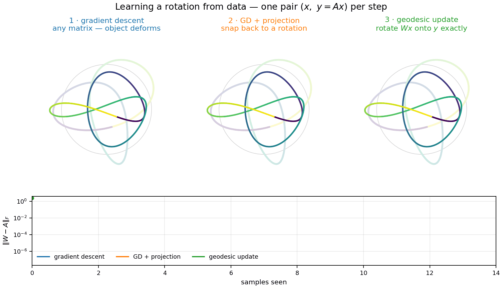
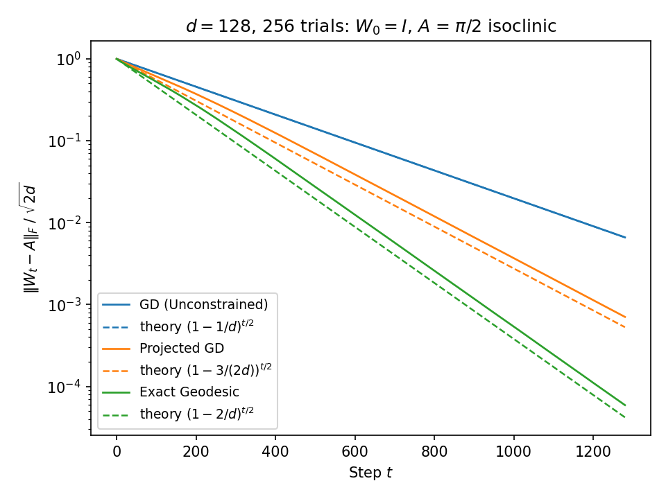

Learning Rotations Online
One fact per step, three ways to use it — and a factor of two for respecting the geometry.
An unknown rotation \(A \in SO(d)\) reveals itself one pair at a time: a unit vector \(x\) goes in, \(y = Ax\) comes out. An estimate \(W\), starting at the identity, must absorb each pair as it arrives. Every update obeys the same instruction — make \(W\) send \(x\) to \(y\) — but how much of the rotation structure it uses sets how fast \(W\) converges.

Three ways to insert information
1 · Gradient descent — few assumptions
The smallest change to \(W\) that makes \(Wx = y\) — a Kaczmarz step. It works for any matrix and knows nothing about rotations; \(W\) drifts off \(SO(d)\). Each step projects the error away from one random direction.
squared error × \(1 - 1/d\) per step2 · Gradient descent + projection
The same step, snapped back to the nearest rotation. The projection keeps only the rotational part of the correction — in closed form, a rotation through exactly half the angle between \(Wx\) and \(y\).
squared error × \(1 - 3/(2d)\) per step3 · A native update for rotations
\(R\) is the geodesic rotation carrying \(Wx\) exactly onto \(y\): the full angle, never leaving \(SO(d)\). It corrects the error on both sides at once, doubling the contraction. Full derivation →
squared error × \(1 - 2/d\) per stepResult
The three contractions sit in ratio 1 : 1.5 : 2 —
using the constraint doubles the rate; projecting after the fact recovers half the gain.

Implementation
Each update is a correction of rank at most two, so a step costs \(O(d^2)\) — no SVD anywhere: the projection in update 2 uses its half-angle closed form, and the geodesic rotation collapses to two outer products. The figure reproduces in about two seconds on a laptop:
git clone https://github.com/yaroslavvb/learning-rotations
python large_d_collapse.py # simulate + plot
python benchmark_d128.py # equivalence vs SVD reference + timings